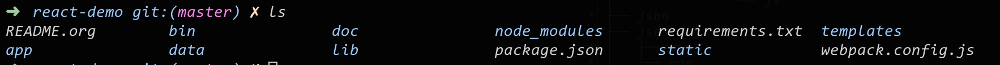
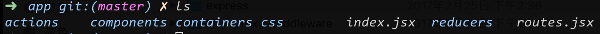
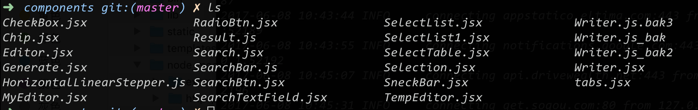
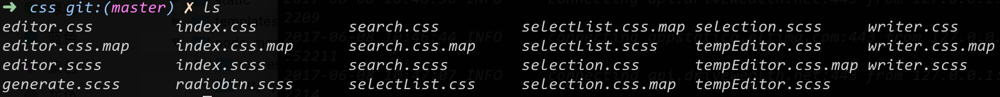
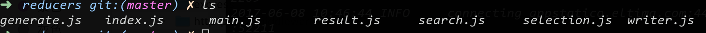

创意文案项目交接文档
1 项目说明
1.1 概述
一个自动抓取并生成创意文案的工具, 可供创意制作人员参考，后期可以通过机器学习自动化生产广告创意
1.2 目的
1.3 意义
1.4 必要性
1.5 产出
- 自动化批量产出优质创意, 包括创意文案和创意图像, 可用于线上投放
- 从网络收集大量优质语料, 汇总成一个 Web 产品, 供人工检索和参考
- 分析现有创意图像的投放效果, 产出影响创意图像的投放效果分析报告, 自动化产生创意图像组合
2 项目功能
2.1 产品设计
2.1.1 原型
2.1.3 文案采集
- 技术点
- 自动化采集广告文案
就整个互联网环境来说，广告文案并不是一种丰富的资源，而且流行的文案会随着时间不断发生变化，因此必须不断通过互联网获取新文案资源。本项目中文案来源是一些投放广告较多的优质媒体，例如今日头条。采集这些媒体上的广告文案资源使用了以下技术手段，基于 python3 的异步模块 asycio 编写异步爬虫模拟浏览器，对包含文案的页面进行访问，获取返回结果后，使用 python 的 html 解析库 pyQuery 针对特定媒体的页面数据结构，进行文案信息提取。将采集的结果作为文案清洗模块的输入。
- 自动代理切换
大多数媒体网站，都会对同一 ip 的访问进行限制，当请求超过阈值后会封锁该 ip。因此，进行大规模文案采集时，需要根据情况建立一个代理池，并自动切换池中代理对页面进行访问。本项目整合了免费代理和收费代理，共计 500 个 ip，先通过代理有效性验证模块，检测代理 ip 的有效性，然后把有效的代理 ip 加入代理池。如果在访问时某个 ip 失效次数超过阈值，则将其从代理池中清除。
- 分布式并行采集
使用 redis 作为消息队列，在多台机器上部署采集程序，这样可以极大提升采集效率，充分利用多余的机器资源。
- 数据清洗，格式规范
利用正则表达式，对文案中的多余字符进行过滤和规范。
- 数据结构化存储
使用 postgresql 作为文案数据库，将过滤清洗后的文案以及相关数据入库，用于后续的挖掘和分类。除了固定字段外，保留一个 JSONB 的额外信息字段，用于扩展。
- 自动化采集广告文案
2.1.4 文案挖掘
- 技术点
- 文案分类标签
结合了类目信息数据库的规则，对每一条文案所对应的来源、行业进行标签标记，允许一条文案有多个标签。标签会出现在搜索结果页，用户可以点击标签筛选对应的文案。
- 文案文体标签
针对文案内容设置文体识别规则，一共包括独立于标签体系之外的九种文体，用户在进行文案检索时可以看到对应文体标注，方便用户识别文案的结构，是对标签体系的一种补充。
- 文案数据挖掘
基于采集的文案内容，文案数据挖掘模块负责执行 nlp 和机器学习算法挖掘出有价值的信息，直接或间接提供给用户使用。
- 文案相关关键词检索
根据用户选择词，访问文案数据挖掘模块，获得与该词相关性强的词列表，以及对应权重分数信息，相关性是通过计算大量语料词向量获得。用户在文案编辑界面点击获取相关词，可以看到相关词列表，点击该列表上的词可以插入到文案辅助编辑区。
- 文案相关行业词检索
根据用户选择的待编辑词，访问文案数据挖掘模块，获得与该词相关性强的词列表，以及对应权重分数信息，行业词列表是通过挖掘有行业标注的文案语料获得。用户在文案编辑界面点击获取相关词，可以看到相关词列表，点击该列表上的词可以插入到文案辅助编辑区。
- 文案词优质高频检索
根据用户选择的待编辑词，访问文案数据挖掘模块，获得与该词相关性强的词列表，以及对应权重分数信息，高频词是结合该文案语料在实际投放中的 CTR 获得。用户在文案编辑界面点击获取相关词，可以看到相关词列表，点击该列表上的词可以插入到文案辅助编辑区。
- 相关词权重分值评估
对各类词原始权重进行分值换算，并进行归一化，使最终得分便于用户评估参考。
- 文案分类标签
2.1.5 文案检索
- 技术点
- 检索算法
设计了模糊查询检索算法，避免使用简单的关键词匹配，一方面避免用户因输入不当造成的结果缺失，另一方面极大加快了检索速度。
- 动态 ranking 策略
当文案数量多时，如果每次用户搜索到的结果 ranking 都完全一样，排名靠后的结果将难以被用户获知。为避免这种情况，对检索展现的结果进行动态 ranking 排序，确保符合条件的文案以动态顺序展现。
- 多次检索，文案购物车
用户进行文案检索之后，在检索结果页面可以继续进行多次检索，每次检索后选取的文案结果，都可以保存到临时的“文案购物车中”，这样在一次搜索中无法完全覆盖问题时，可以通过多次检索添加所有满足需求的文案到购物车，然后统一进行编辑。
- 检索算法
2.1.6 文案编辑
3 技术路线
3.1 依赖环境
3.1.2 nginx
版本 1.10
3.1.4 postgresql
版本 9.5.2
3.1.5 docker
版本 1.13.1
3.2 前端
前端包含了页面组件、前端路由、数据流管理、页面布局 共 4 个模块，主要基于 react 框架，配合 npm 和 webpack 实现。
3.2.1 页面组件
页面按钮、表格文本框等组件都是基于 react 实现。使用 draftjs 富文本编辑器框架，实现项目中的主编辑区和辅助编辑区。整体页面风格采用了基于 react 的 material-ui，实现了协调的 material design 风格页面。前端所有依赖的包和扩展都是通过 npm 进行统一管理和控制，提高了可维护性和可移植性。用于对 css、js、jpeg、png 等资源进行统一编译和打包。
3.2.2 路由
采用 react-router 作为路由组件，对文案检索，文案选择，文案编辑，文案导出 4 个页面进行路由管理。
3.2.3 数据流管理
使用 redux 对 react 组件进行数据流管理，确保每个组件都严格按照单向数据流要求进行设计和实现。
3.2.4 页面布局
没有采用 react 组件的形式进行页面布局控制，而是采用了相对灵活的 flex 布局，使用 scss 文件对布局进行改写和调整，再由 webpack 打包成 css 文件进行页面渲染。
3.3 后端
后端分为数据采集、文本挖掘、数据库管理、web 服务共 4 个模块。
3.3.1 数据采集
基于 python 实现了多个媒体的大规模爬虫，使用了 python 的异步框架提高性能，使用 redis 对爬虫任务进行分布式管理。数据采集模块得到的数据写入数据库进行统一管理和使用。
3.3.2 文本挖掘
基于 python 的 nltk、gensim、pynlpir 实现。
3.3.3 数据库管理
采用 postgresql 数据库进行数据存储，使用 alembic 进行数据库管理，使用 sqlalchmey 实现数据库 orm 操作。
3.3.4 web 服务
采用 flask 作为后端框架，使用 flask_restful 实现 restful api。
3.4 部署
部署采用了两种方式
3.4.1 方案 A
- python3.5.2
- pip 9.0.1
- nodejs v7.5.0
- npm 4.1.2
- webpack 2.2.1
- nginx 1.10.2 以上版本，开启模块 auth_basic auth_pam auth_request cache_purge dav dav_ext fastcgi gzip map memcached proxy rewrite，配置为默认启动的系统服务
- postgresql 9.5.5(需建表，并提供读写权限账号)
3.4.2 方案 B
- 采用 docker 部署
4 项目规划
4.1 产品设计
- 原型参考 http://thebestspinner.com/
- 核心功能 1: 根据抓取的高质量文案, 训练机器学习模型, 通过算法生成优质文案, 可直接用于投放
- 核心功能 2: 根据已有文案模板中的关键词, 生成相关词列表, 人工筛选相关词替换该关键词, 通过多个相关词组合生成大量优质原创文案
- 核心功能 3: 根据创意图像的投放效果, 生成图像元素与投放效果之间的相关性分析, 自动生成图像元素优化组合
4.2 人力分配
- 产品人力 1
- 前端人力 1
- 算法人力 1.5
4.3 测试验证
- 人工评审: 随机给出机器文案和语料文案, 有人工判断哪个出自机器, 如果不易判断, 表示机器文案质量高
- 线上测试: 根据特定广告批量产出文案用于投放, 根据实际投放结果筛选出高质量的文案模板
5 数据处理
5.1 数据来源
使用爬虫获取今日头条部分广告标题和新闻标题
5.2 文体规则
将所有标题根据文案特点分为以下文体, 通过正则匹配归类
| 文体名 | 匹配规则 |
|---|---|
| 如何体 | 如何,怎样,怎么,何以,知道 |
| 揭秘体 | 揭秘,爆料,劲爆,内幕,真相,隐情 |
| 夸张体 | 惊,紧急,十万火急,吓一跳,围观,竟然,原来,不可思议,疯转,疯了 |
| 否定体 | 落伍,亏大了,甩几条街,不是 |
| 符号体 | ［,｛,[,{,？,！,?,! |
| 归纳体 | 盘点,合集,都在这里,大全,总览 |
| 福利体 | 赚大了,赠送,红包,惊呼,给力,快抢,疯抢,免费,便宜,包邮,折扣,降价,优惠,送礼,返现 |
| 消息体 | 好消息,大消息,今日消息,最新消息,新政出台,HOT,关注,热点,重磅消息 |
| 人性体 | 美女,美色,偷窥,私密,占便宜 |
5.3 展现
对每一类文体标题, 每次刷新页面时随机选取 10 条进行展现
6 后端
6.1 主要 API 接口说明
7 前端
7.1 环境
- npm3
- webpack2
- 通过 babel 支持 es6
- 使用 redux-devtools 进行调试
7.2 框架
react + redux + react-router
7.3 UI 设计
material-ui
7.4 页面布局
flex
7.5 文本编辑
draft-js
8 代码结构
8.1 目录结构
 整个项目的工程目录内容如上图所示，其中 requirements.txt 是依赖的 python 库列表，可以使用 pip 获取依赖。package.json 是依赖的 nodejs 库列表，可以使用 npm 获取依赖，并生成 node_modules 目录。webpack.config.js 是 webpack 的配置文件。除此之外，目录结构如下图所示：
├── app │ ├── actions │ ├── components │ ├── containers │ ├── css │ └── reducers ├── bin ├── data │ └── words ├── doc ├── lib │ ├── mob_autotag │ └── util ├── static │ ├── css │ └── js └── templates
8.2 app 目录
 该目录主要包含 react 相关的组件，其中 index.jsx 包含了 react 组件根节点信息。routes.jsx 包含了前端 url 路由的配置信息。其各个子目录作用如下：
8.2.1 actions
redux 中的组件 action 逻辑目录，目前尚未分离这部分逻辑，空置。
8.2.2 components
 react 的组件目录。Search.jsx 对应文案搜索页面。Writer.jsx 对应文案编辑页面。Selection.jsx 对应文案选择页面。Generate.jsx 对应文案生成界面。
8.2.3 containers
重构用，目前空置。
8.2.4 css
flex 布局的 css 目录。包含各个页面的 layout 设置。 
8.2.5 reducers
 redux 的 reducer 目录。index.js 为各个 reducer 的汇总。search.js 对应搜索, selection.js 对应文案选择，writer.js 对应文案编辑，generate.js 对应文案生成。
8.3 bin 目录
flask 后端目录。其中 run.py 是整个项目的启动入口。
8.4 doc 目录
项目说明文档目录。
8.5 lib 目录
本项目依赖的一些自建库。
8.6 static 目录
webpack 打包生成的静态资源。
8.7 templates
页面模板目录。本项目使用 flask 的 jinja2 作为模板引擎。
9 部署
9.1 docker 打包
目前在阿里云上的镜像仓库地址是 registry.aliyuncs.com/zjc/creative Docker 镜像打包流程（假设已安装了 docker 环境）编写 dockerfile 参考：http://dockone.io/article/131 docker 镜像提交参考：https://docs.docker.com/engine/getstarted/step_six/#step-1-tag-and-push-the-image
# 生成镜像 docker build --tag <TAG NAME> <待打包的项目路径> # 查看镜像 ID <IMAGE ID> docker image # <REPO ADDRESS>使用了阿里云的 docker hub，使用前要先注册阿里云开发者账号 docker tag <IMAGE ID> <REPO ADDRESS> docker push <REPO ADDRESS>
9.2 docker 部署流程
假设线上机器已经安装了 docker 环境
# 从阿里云的 docker 仓库中 pull 镜像 docker pull <REPO ADDRESS> # 查看镜像 <IMAGE ID> docker images # 得到输出如下 # REPOSITORY TAG IMAGE ID CREATED SIZE # registry.aliyuncs.com/zjc/creative latest e94b646e77f1 7 days ago 6.104 GB # 启动镜像，注意端口映射，如果需要交互式运行 可以添加 -it 参数 docker -p <HOST PORT>:<IMAGE PORT> <IMAGE ID> # 进入一个正在运行镜像内部，主要用于调试和 debug docker attach <CONTAINER ID> # docker 镜像与宿主机互相拷贝文件 # http://wiki.jikexueyuan.com/project/docker-practice/copy-the-container.html
9.3 外网访问
因为机器处于 VPN 的内网网段，没有连接 VPN 时是无法访问的，需要借助工具 ngrok，阿里云主机的端口存在被屏蔽的情况，之前使用的 19999 端口无法访问，目前调整到 8000 端口
- 直接使用
进入 ngrok 目录，执行./ngrok http <PORT>
- 官网说明
- 自己搭建 ngrok 服务
9.4 当前线上地址
10 后续改进点
- 利用爬虫继续收集高质量的文案语料(尤其是广告文案语料)
- 建立机器学习模型, 自动生成更多优质文案
- 根据自定义情境生成文案
- 图像处理相关